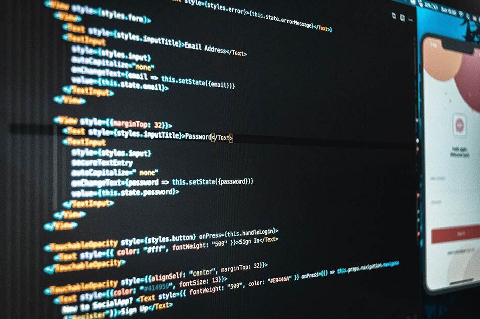
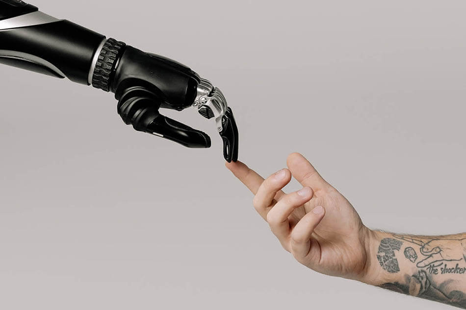

Como parceiros da Opentext, estamos posicionados de forma única para auxiliar na modernização de aplicativos e na melhoria da conectividade, utilizando as ferramentas avançadas do segmento AMC. Os produtos da linha AMC não só apoiam a transição entre tecnologias anteriores e inovações atuais, mas também potencializam o valor dos investimentos em TI. Esta modernização se baseia em três pilares fundamentais: aplicação, processo e infraestrutura. Juntos, esses pilares garantem uma transformação coesa e eficiente.

Proteção de dados, sistemas e operações com estratégias robustas de segurança, monitoramento contínuo e prevenção contra ameaças digitais.
Otimizamos processos por meio de automação inteligente e integração entre plataformas, reduzindo custos operacionais e aumentando a produtividade.

Transformamos dados em informação estratégica com dashboards, análise inteligente e apoio à tomada de decisão orientada por resultados.